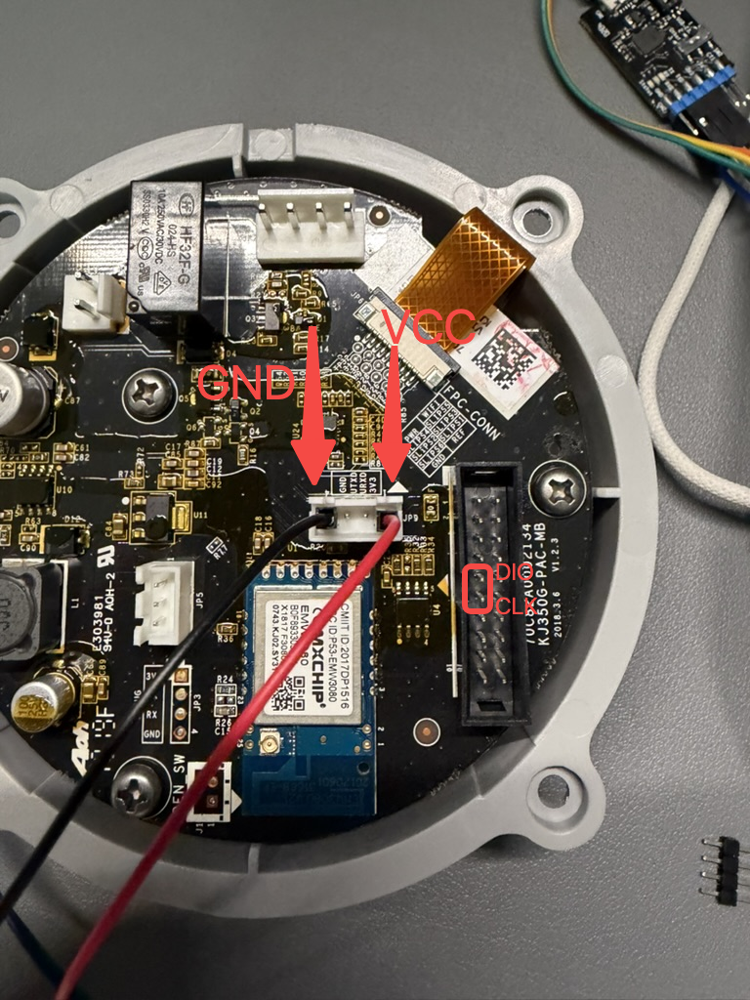

Flash A1 / M1
For the A1 air purifier and M1 monitor with original EMW3080B / MK3080B modules. Their interfaces are the same, but firmware is product-specific: never interchange A1 and M1 files. TC1 A1 is a different product; see TC1 flashing.
Read Before flashing. Disconnect mains, original supplies and loads, use a stable independent 3.3 V supply, and back up the complete Flash before writing. A full image overwrites the bootloader, original firmware and some settings.
Choose a method
| Method | Requirements |
|---|---|
| J-Link | J-Link plus MXCHIP mflash; writes a full image for first installation / recovery. A1 factory points can accept jumper wires |
| Serial bootloader | 3.3 V USB-TTL and YMODEM software; original bootloader must work. M1 has more room around its module and does not require buying J-Link |
| Product | J-Link full image | Input for preparing serial images |
|---|---|---|
| A1 purifier | phicomm_a1.all.bin |
phicomm_a1.ota.bin.raw |
| M1 monitor | phicomm_m1.all.bin |
phicomm_m1.ota.bin.raw |
Download the correct product and verify SHA256SUMS from that release. .ota.bin / .ota.bin.signed are signed web-update packages, not full images or directly transferable serial user applications.
J-Link flashing
Module pads
Either product can use wires soldered to the module pads. Check orientation by pin numbers.

| Module pin | Connection |
|---|---|
| 1 or 3, SWD_CLK | J-Link SWCLK, standard 20-pin pin 9 |
| 2 or 4, SWD_DIO | J-Link SWDIO, standard pin 7 |
| 16, VCC | Independent 3.3 V and J-Link VTref, standard pin 1 |
| 17, GND | Common supply negative and J-Link GND, standard pin 4 |
VTref is a sensing input, not a power output. Do not connect J-Link's 5 V output. Use signal labels for compact programmers rather than assuming standard pin numbers. SWD flashing does not require grounding BOOT.

A1 factory points
A1's JP9 GND / 3V3 supply points and nearby DIO / CLK points avoid soldering to module pads. JP9 also has UART TX / RX: do not confuse them with SWD. Check the photo and silkscreen; make firm jumper / header contacts.

VCC here means module 3.3 V, not the original supply input. Disconnect the original supply and fan. Wire colors are only visual references. M1 uses the module pads above.
Programming steps
- Install SEGGER drivers and prepare mflash using the MXCHIP instructions.
- With power off, wire SWD, common ground and independent 3.3 V; connect J-Link. Select MX1290 and jlink_swd.
- Save a complete Flash backup using the tool's read function before erase / write. Stop if reads fail or the connection is unstable.
- Choose the product's
.all.bin, set Write Address = 0 (Flash offset), verify model and checksum, and click Write. Wait for writing and verification. Do not enter a CPU-mapped address or try whole-chip erase. - If automatic verification is unavailable, read back from address
0for the written length and compare every byte to the image. Disconnect only after a match. Never move wires or cut power during writing.
Bootloader flashing
Use a 3.3 V, 921600-baud USB-TTL adapter, independent 3.3 V supply and YMODEM-capable terminal. Retain M1's original sensor controller.
Wiring and download mode

| Module pin | Connection |
|---|---|
| 16, VCC | Independent 3.3 V |
| 17, GND | Supply negative and USB-TTL GND |
| 9, user UART TX | USB-TTL RX |
| 10, user UART RX | USB-TTL TX |
| 19, BOOT | Ground during download; release afterward |
Cross TX / RX. This is the user UART, not the log UART. If another board controller drives module RX, isolate its output first to avoid two TX drivers. Disconnect A1's original supply and fan.
Wire with power off and BOOT low. Use 921600, 8N1, no flow control, then power on. Wait for MXCHIP>. If it does not appear, check power, ground, TX / RX and BOOT; never send erase commands blindly. This method preserves the original bootloader and applies only to the menu and partition layout below.
1. Confirm the menu and partition map
Select the USB-TTL port with 921600, 8N1, no hardware or software flow control. Enter ?:
1:FWUPDATE Update MiCO
2:USERUPDATE Update user APP
5:MEMORYMAP
6:BOOT
Enter 5 and verify the key partitions. These are Flash offsets, not CPU-mapped addresses.
| ID | Partition | Start | Length |
|---|---|---|---|
| 2 | Bootloader | 0x00000000 |
0x00013000 |
| 3 | MiCO Kernel | 0x00013000 |
0x000b5000 |
| 6 | User Application | 0x00088000 |
0x00040000 |
| 7 | PARAMETER1 | 0x000c8000 |
0x00004000 |
| 8 | Parameter backup, also labeled PARAMETER1 | 0x000cc000 |
0x00004000 |
The MiCO region includes the user application, at offset 0x75000 from MiCO's start. Stop if the menu or map differs. This procedure does not write the bootloader, parameters, ATE, OTA Storage or USER Storage. Replacing the kernel / application still replaces factory firmware; preserving those regions does not replace a full backup.
2. Prepare serial images
Verify the product's raw OTA file against the release checksums. Set model below to m1 or a1. Never send .all.bin to menu 1 or 2, or an unconverted OTA file to menu 2.
Raw .ota.bin.raw contains 0x75000 bytes of kernel / padding, then the user application and a 16-byte MD5 trailer. FWUPDATE needs contiguous kernel / application data without the MD5 trailer. USERUPDATE needs the application including its 8-byte length / CRC header.
Run this in the firmware directory, using only a verified raw image, never a signed web package. It checks length, MD5, application magic, ABI, product and CRC before producing the two serial files:
python3 - <<'PY'
from pathlib import Path
import binascii
import hashlib
import struct
model = 'm1' # change to 'a1' for the A1 purifier
image = Path(f'phicomm_{model}.ota.bin.raw').read_bytes()
offset = 0x75000
assert offset + 144 <= len(image) <= offset + 0x40000 + 16, 'Invalid image length'
assert hashlib.md5(image[:-16]).digest() == image[-16:], 'OTA MD5 mismatch'
length, reserved, crc, magic, stack, abi = struct.unpack_from('<IHHIII', image, offset)
assert 120 <= length <= 0x40000 - 8, 'Invalid application length'
assert len(image) == offset + 8 + length + 16, 'Invalid application boundary'
assert magic == 0xc89346 and abi == 3, 'Application magic or ABI mismatch'
user = image[offset:-16]
assert reserved == crc == binascii.crc_hqx(user[8:], 0), 'Application CRC mismatch'
product = f'PHICOMM_{model.upper()}_EMW3080'.encode() + b'\0'
assert product in user, 'Image product does not match model'
Path('fw.serial.bin').write_bytes(image[:-16])
Path('user.serial.bin').write_bytes(user)
print('Kernel + application:', len(image) - 16, 'bytes')
print('User application:', len(user), 'bytes; SHA256:', hashlib.sha256(user).hexdigest())
PY
Record the resulting file lengths and compare them to the device's reported Size. Lengths and hashes vary by firmware; use your downloaded file's results.
3. Send and read back
- At
MXCHIP>, enter1. Wait forWaiting for the file to be sent/C, then sendfw.serial.binwith YMODEM CRC, 1 KiB packets. Use a 50 ms packet interval where supported; readback verification is still required. - Wait for
Successfully!and checkSize. This confirms only the bootloader's receive / write report, not that the application can boot. - Enter
2 -rand use Receive YMODEM to saveUSER.bin. It must contain the complete0x40000user partition: 262144 bytes. Exit minicom with Ctrl-A, Q before a Linux script takes exclusive access. Never let two programs read / write the serial port simultaneously. - Compare the application-length prefix against
user.serial.binand validate its CRC:
python3 - <<'PY'
from pathlib import Path
import binascii
import hashlib
import struct
expected = Path('user.serial.bin').read_bytes()
readback = Path('USER.bin').read_bytes()
assert len(readback) == 0x40000, 'User partition readback length mismatch'
actual = readback[:len(expected)]
assert actual == expected, 'Application readback mismatch; do not boot; write and read back again'
length, reserved, crc = struct.unpack_from('<IHH', actual)
assert length + 8 == len(actual), 'Application length mismatch'
assert reserved == crc == binascii.crc_hqx(actual[8:], 0), 'Application CRC mismatch'
print('Application bytes and CRC match; SHA256:', hashlib.sha256(actual).hexdigest())
PY
- Only after matching readback, enter
6to boot. Release BOOT from ground before a normal power cycle; restore original wiring as described in the preparation guide.
4. Recover an application CRC failure
user firmware invalid [-3] means the user application CRC failed.
- Reenter the bootloader, verify checksums and regenerate the same firmware's user application file.
- Enter
2and senduser.serial.binvia YMODEM with a 50 ms packet interval. A matching product.usr.binis also valid if verified identical to the extracted result. - After
Successfully!, run2 -rand compare readback with the script above. - If bytes differ, check power, ground, wiring, exclusive port access and the USB-TTL adapter, then rewrite and read back. Preserve the bootloader and parameters; never use whole-chip erase as trial and error.
- Enter
6only when the application bytes match exactly.
5. Confirm application execution
Booting....... means the bootloader is starting the application. A running M1 switches the user UART to 115200, 8N1, no flow control. Staying at 921600 produces garbled text. At 115200, hex mode shows this 12-byte sensor query about every five seconds:
23 01 00 00 00 00 00 00 00 00 00 21
That frame is M1-specific. On A1, restore wiring and check the setup hotspot, WebUI and panel instead.
Finish and provision Wi-Fi
- Power off, release BOOT ground if used and remove programming wires.
- Restore original wiring, reassemble, then reconnect the normal supply.
- Join
A1-AP-<last six MAC digits>orM1-AP-<last six MAC digits>and openhttp://192.168.0.1/. - Verify model and connectivity. Check A1's fan, ring and panel, or M1's readings and screen. Configure MQTT if needed and confirm connection.
See A1 operation, M1 operation and firmware updates. Wiring, mflash and serial procedures reference the MXCHIP EMW3080 flashing guide.